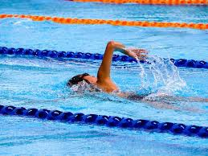

La natation, c'est-à-dire l'action de nager, désigne les méthodes qui permettent aux êtres humains de se mouvoir dans l'eau sans aucune autre force propulsive que leur propre énergie corporelle. Parmi les activités humaines, la natation regroupe le déplacement à la surface de l'eau et sous l'eau (plongée, mermaiding, natation synchronisée, water-polo), le plongeon et divers jeux pratiqués dans l'eau. Elle se pratique en piscine, en eau libre (lac, mer), ou en eau vive (rivière)1. La natation est un sport olympique depuis 1896 pour les hommes et depuis 1912 pour les femmes.
Bien qu'il soit possible que les humains aient su nager dès la période préhistorique (il n'existe pas de preuves archéologiques dans ce domaine), les premiers documents à ce sujet datent approximativement de 4 500 avant Jésus Christ8 et proviennent d'Égypte, de Grèce, d'Assyrie et de Rome. On enseignait la natation aux citoyens romains dès leur enfance : d'un homme peu instruit les Grecs (Platon : Lois III, 689d) et les Romains disaient : « Il ne sait ni lire ni nager. » Aux thermes, les Romains pouvaient nager dans la natation, piscine au sens de nager[pas clair]. Mais cette discipline n'apparaissait pas dans les Jeux Panhelléniques. En France, c'est surtout à partir des Jeux de 1924 que la discipline sportive en tant que telle et les piscines se développèrent. Non sans opposition, certains craignant ce qu'ils percevaient comme une pratique immorale. Ainsi, la section lyonnaise de la Ligue pour le relèvement de la moralité publique (LRMP) s'indigne, au début des années 1930, des nageuses du quai Saint-Vincent. À leur demande, le maire, Édouard Herriot, fait procéder à une enquête publique, qui conclut que les nageuses paraissent « suffisamment vêtues pour que leurs exercices ne portent aucune atteinte à la morale publique ».
En Suède, Nancy Edberg popularise la natation à Stockholm dès 1847. Elle y donne des cours de natation à des hommes et des femmes, puis, peu après, elle lance des cours de natation destinés aux femmes au Danemark et en Norvège11. Ses démonstrations publiques de natation avec ses élèves à partir de 1856 sont probablement parmi les premières démonstrations en Europe11. En Allemagne, c'est un homme, Ludwig Christof Rübsamen, professeur de gymnastique athlétique à Giessen (Allemagne), qui y fonde une piscine en 1851 et promeut la natation féminine. Aux États-Unis, une des premières femmes à promouvoir la natation féminine est Kate Bennet, qui ouvre en 1870 une école à Manhattan13. Aux Pays-Bas, le premier bassin de natation en plein air date de 1846. Dans ce bassin et ceux qui ouvrent peu après, il y a séparation des sexes : ou bien les bassins sont interdits aux femmes, ou bien ils sont réservés aux hommes la majorité du temps, avec quelques heures par semaine prévus pour une utilisation par les femmes. En 1882, une piscine à ciel ouvert, la piscine Obelt, est construite à Amsterdam ; cette piscine comporte plusieurs bassins dont l'un destiné aux femmes. Y est organisée en 1884 la première épreuve de natation féminine aux Pays-Bas. En 1886, un club de natation féminine est fondé à La Haye, le premier club de ce genre aux Pays-Bas et probablement aussi en Europe continentale. La féderation néerlandaise de natation, fondée en 1888, crée un diplôme de natation en 1890 ; pour cela la fédération commence une formation d'instructeurs de natation ; le premier diplôme de maître nageur, en 1892, est délivré à une femme.